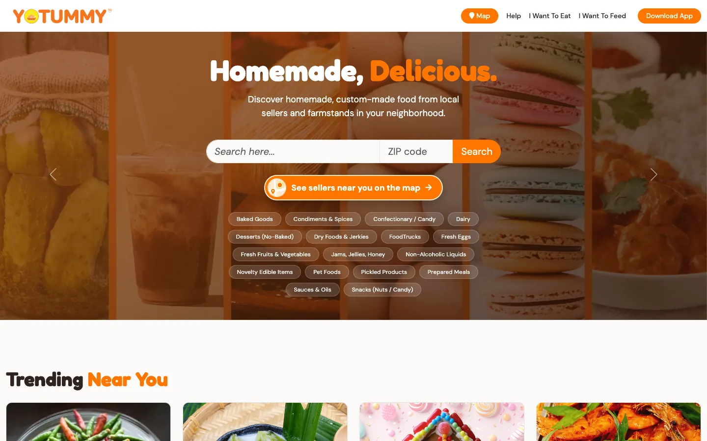
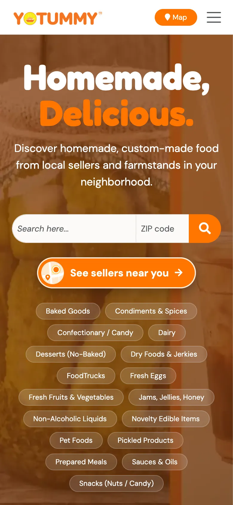

Client site and app
YoTummy
A marketplace for homemade food from local cooks, with a website, seller portal, admin panel and phone app.
- yotummy.com
- Private repo

The numbers
- 206commits in the main app, all mine
- 3.1.1app version shipped to both stores
- 164commits on the redesign prototype
- 4apps: site, seller portal, admin, phone
- 17food categories on the home page today
The problem
A marketplace that already had sellers and shoppers, running on code nobody on the team had written.
YoTummy lets people buy homemade food from cooks and farmstands near them. When I joined I inherited the whole thing: a website, a seller portal, an admin panel and a phone app, all with real users. Payments sometimes failed to record, who could change what was not locked down, and there was no automatic deploy.
The founder also wanted the site to feel less like a directory and more like a place to browse. Both jobs landed on one developer, so the order of work mattered.
Approach
I fixed what could lose money or data first, then built what shoppers see, then pitched the bigger redesign with something they could click.
- Make it safe. Fix Stripe and App Store payments so a payment still records when a setup key is missing. Close the holes around who can change what.
- Make it ship. Set up automatic deploys, so a fix reaches users without a manual upload.
- Make it easier to find food. A map of nearby sellers that groups pins into bubbles and works on phones. New home page sections and polished in-app messaging.
- Show the next step. A separate Next.js prototype with a Mapbox photo-pin map and a category showcase, built to pitch a redesign to the founder.
How it works
- WebsiteBrowse homemade food near you
- Seller portalFor the cooks who sell
- Admin panelFor running the marketplace
- Phone appShipped to both app stores
Shoppers use the website or the phone app. Cooks use the seller portal to list food. The admin panel is how the owners run the marketplace. The older apps are Angular 12 and 18, and the phone app is Ionic and Capacitor, which is how one codebase reaches both stores.
The home page sorts food into 17 categories, from Baked Goods to Food Trucks, and the search box takes a ZIP code so results are local.
Results
The numbers below come from the repositories and the store listings.
| What | Number | Where it comes from |
|---|---|---|
| Main app commits | 206, all mine | The app repository |
| Latest store release | 3.1.1 | App Store and Google Play |
| Prototype commits | 164 | The Next.js prototype repository |
| Apps maintained | 4 | Site, seller portal, admin panel, phone app |
What shoppers see today is in the screens below: a search box, 17 category chips, a trending grid of dishes with price and seller, and a section pointing to the phone app.
What I owned
- Took over an inherited codebase and became its only developer.
- Added a map of nearby sellers that groups pins into bubbles, and made it work on phones.
- Rebuilt home page sections and polished in-app messaging.
- Shipped App Store and Google Play releases, up to version 3.1.1.
- Fixed Stripe and App Store payments, so a payment still records when a setup key is missing.
- Closed security holes around who can change what.
- Set up automatic deploys.
- Built a separate Next.js prototype to pitch a redesign to the founder.
What I learned
- With inherited code, fix payments and permissions before anything shoppers can see. Those are the failures people notice last and pay for most.
- A map is mostly a performance problem. Grouping pins into bubbles is what keeps it usable on a phone.
- A working prototype in the framework you would really use is a stronger pitch than a mock-up.
Screens


